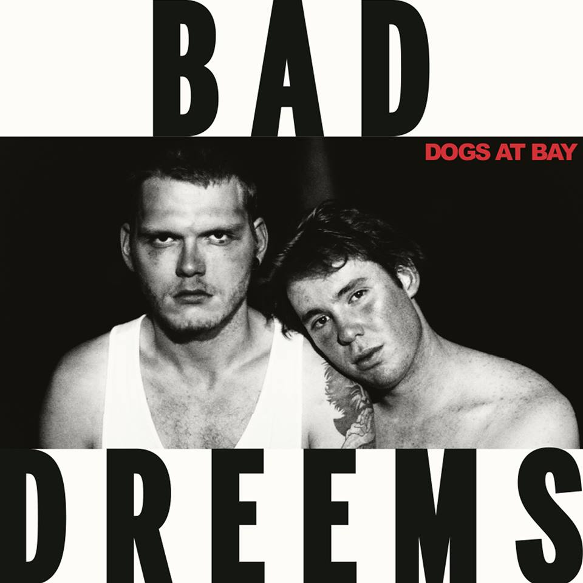

|  |
Bad//Dreems Dogs At Bay Ivy League Records 21 August 2015 |
After two years of writing songs and refining them on the road, Bad//Dreems have finally unveiled their debut 'Dogs At Bay'. With the help of Mark Opitz (AC/DC, The Angels) and his Brunswick studio, the album was recorded live over the space of a fortnight, resulting in a collection of songs that exude the sense of immediacy and urgency, reflecting their raucous stage presence. Weaving the eighties sensibilities of anthemic choruses, watery guitars, melodic bass lines, and reverbed snares alongside a distinct brand of storytelling all come together to create a nostalgic (yet contemporary) wave which is intrinsically Australian. The combination of attentive songwriting and Optiz’s production has created a record that bottles the magic of Bad//Dreems’ live shows, with a refined edge. ‘Dogs At Bay’ is a journey through the heart of Australia that manages to feel completely familiar and refreshingly new simultaneously. While they do sound like a pub-rock band from the eighties at times, it would be totally wrong for anyone to write Bad//Dreems off as just that. Just listen to the brash opener New Boys, which narrates the history of an Adelaide bikie gang of the same name amidst the thundering drums of Miles Wilson and the frenzied guitars of Alex Cameron. This riotous energy is present throughout the whole album, like in the breakout singles Dumb Ideas, Cuffed And Collared, and Hiding To Nothing, and even in the tightly wound Naden, which opens up and lets James Bartold’s thumping basslines shine. The band also show the ability to step back and let their songs breathe, with songs like My Only Friend, Hume, Blood In My Eyes, and Ghost Gums, whose jangly guitars and striking melodies really tie the record together. A highlight of the album are the musings of Ben Marwe, combined with a ragged delivery, creates songs that are ripe with the the day-to-day imagery that comes with living in Adelaide. This is immediately apparent in both the rollicking number Paradise, and in Sacred Ground, a perfect closer whose spoken word delivery lends itself to the story being told (I also nominate it to be the new Australian anthem). But the band's observance reaches farther than their hometown and question Australia's societal state, heard on Bogan Pride. Recounting Australia through the eyes of a "bogan", the song inverts their sense of pride, essentially rejecting the ideology of the younger generation of men, in an attempt to spark an introspective search. This debut offering from Bad//Dreems is a triumphant one, brimming with songs that are both sentimental and looking towards the future. Combined with an unbridled energy that’s now a signature of the band, 'Dogs At Bay' proves to be an absolute ripper of an album. And believe me, one of the best ways to experience it is to see them tear through it live. Originally written for City And Sound. |